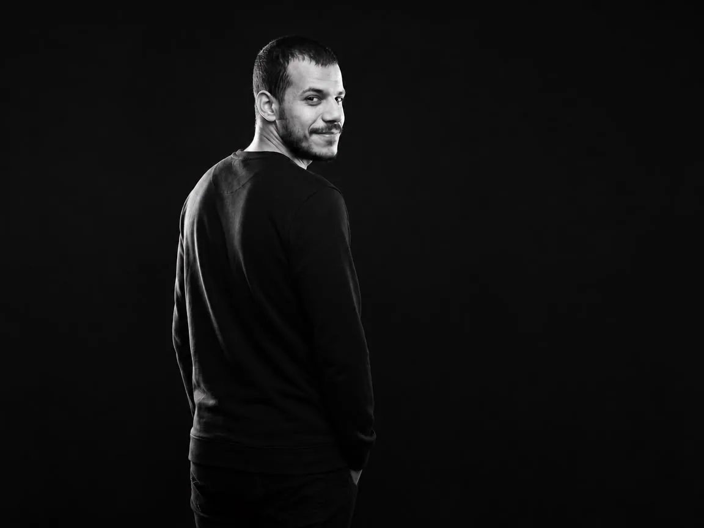

Hallo, Das bin ich
Mohamad Issa
und ich studiere
Ich komme ursprünglich aus Syrien und lebe seit neun Jahren in Deutschland. Mein Studium ist für mich von großer Bedeutung. Der Studiengang, den ich gewählt habe, passt perfekt zu meinen Interessen und meiner beruflichen Ausrichtung.
Über Mich
Mohamad Issa
Ich bin ein leidenschaftlicher Reisender, der gerne neue Kulturen entdeckt und sich von der Vielfalt der Welt inspirieren lässt.In meiner Freizeit tauche ich gerne in spannende Bücher ein, die mir neue Perspektiven eröffnen und meinen Horizont erweitern.Fitness ist mir wichtig, und ich verbringe regelmäßig Zeit im Fitnessstudio, um Körper und Geist in Balance zu halten.Zusätzlich spiele ich gerne Schach, da es mir hilft, strategisches Denken zu fördern und meine Konzentration zu verbessern.

Medieninformatik trifft
UX/UI Design.
Student der Medieninformatik mit einem starken Fokus auf User Experience und Interface Design. Aktuell absolviere ich ein Praktikum bei Landsiedel NLP Training - ein Umfeld, das mir zeigt, wie Sprache, Psychologie und digitale Produkte zusammenhaengen. Ich moechte Erlebnisse schaffen, die nicht nur funktionieren, sondern sich gut anfuehlen.
Kontakt aufnehmen
Du kannst mir jederzeit schreiben.
Email: mohamad95issa@gmail.com